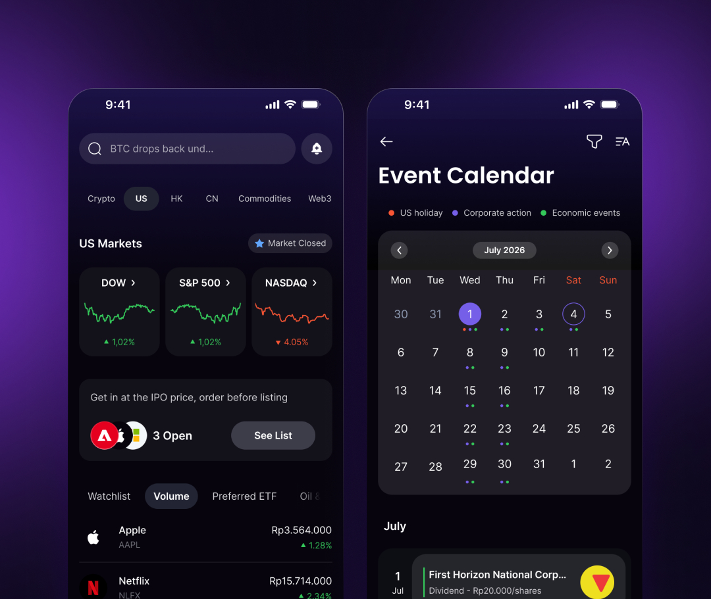
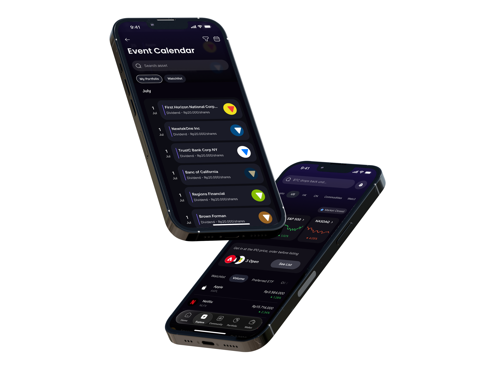
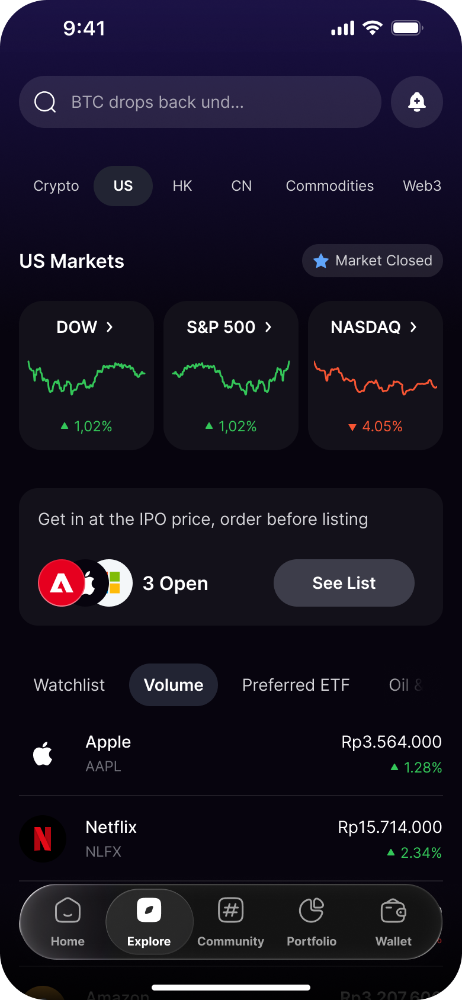
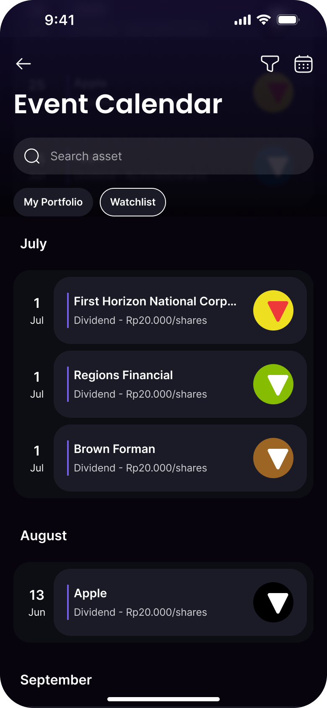
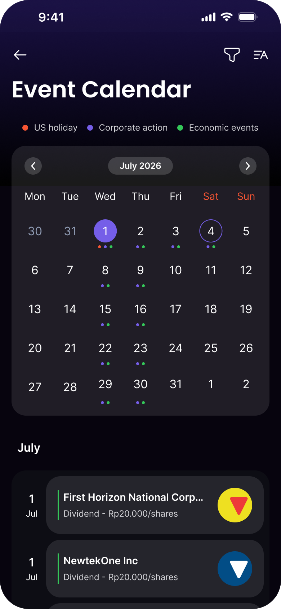
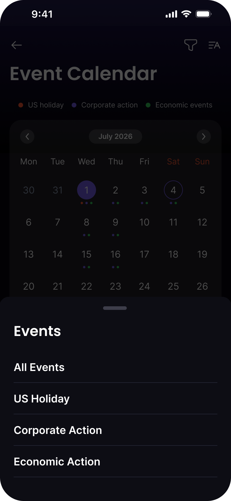

Nanovest US Stocks Event Calendar
Dividen, stock split, earnings, dan hari libur bursa AS, untuk saham yang sudah dipegang, di layar yang terbuka pada bulan ini.
Kunjungi nanovest.io- Klien
- Sektor
- Peran
- Tim
- Periode
- Permukaan

Ringkasan
Nanovest membuat orang Indonesia bisa memegang saham AS. Corporate action adalah event yang menggerakkan portofolio tanpa siapa pun menekan tombol beli, jadi ia diberi ruangnya sendiri: semua tanggal yang menyentuh isi portofolio, sebagai daftar yang terbuka pada bulan ini dan grid yang cukup berjarak satu ketuk.

Cakupan
- 01Wawancara stakeholder
- 02Bedah kompetitor
- 03Taksonomi event
- 04Arsitektur informasi
- 05User flow
- 06Wireframe
- 07Desain antarmuka
- 08Filter & empty state
- 09Prototyping
- 10Design QA
Masalah
Tanggal ex-dividen datang sebagai kejutan.
Corporate action selalu sampai ke pengguna setelah kejadian. Dividen muncul sebagai saldo yang berubah semalam, stock split sebagai jumlah lembar yang tidak lagi cocok dengan kemarin, bursa AS yang tutup sebagai hari tanpa pergerakan dan tanpa penjelasan. Tanggalnya ada (di filing, di news feed, di balasan support), tapi tidak pernah berada di sebelah saham yang benar-benar dipegang.
Yang tersedia sebelumnya adalah feed: semua hal tentang semua ticker, diurutkan dari yang terbaru. Ia menjawab apa yang sudah terjadi. Tidak ada yang bisa memakainya untuk menjawab apa yang akan terjadi, pada saya, dan hanya versi itulah yang ditanyakan investor ritel.
Pendekatan
Daftar yang terbuka pada bulan ini, grid saat bulannya yang jadi pertanyaan.
Daftar adalah kondisi awalnya. Event dikelompokkan di bawah bulannya, tanggal memegang rel kirinya sendiri, dan seluruhnya bergulir maju, karena pertanyaan yang biasa muncul adalah apa yang akan datang untuk saham saya, dan daftar menjawabnya tanpa menyuruh siapa pun membidik satu tanggal lebih dulu.
Grid bulanan duduk di balik satu ikon di header, untuk pertanyaan yang lain: minggu ini bentuknya seperti apa. Ia membawa tiga kelas event yang sama sebagai titik warna (hari libur AS, corporate action, event ekonomi), dan daftarnya tetap ada di bawahnya, tidak berubah. Satu set data, dua cara membaca, tanpa layar kedua yang harus ikut dirawat.
Cakupan berupa sepasang chip, bukan tab bar: My Portfolio dan Watchlist mempersempit baris yang sama di tempatnya. Jenis event ditaruh di sheet dari ikon filter, supaya empat pilihannya datang selebar layar dan terjangkau ibu jari, bukan diperas jadi dropdown di pucuk layar.
Layar



